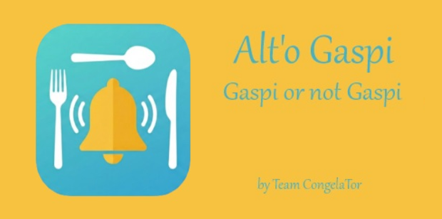

Gaspi or not gaspi ? À vous de jouer !
Vous ne voulez plus découvrir des produits périmés au fond de votre réfrigérateur ou de vos placards ?
Alt'o Gaspi est votre allié quotidien pour une cuisine responsable, organisée et économique.
Ne perdez plus la trace de vos aliments grâce à une gestion simple et efficace.
Alt'o Gaspi a été conçue pour être légère, rapide et répondre à un seul objectif : réduire concrètement le gaspillage alimentaire à la maison.
Prenez le contrôle de vos stocks, faites des économies et participez à une consommation plus durable.
Téléchargez Alt'o Gaspi et donnez une seconde chance à vos aliments !